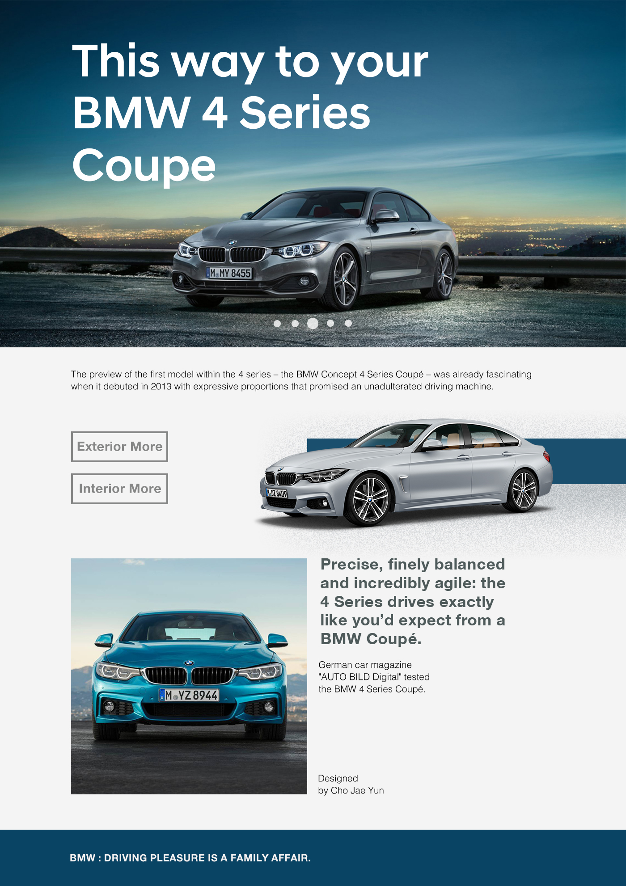

BMW
4 Series
4 Series
The BMW 4 Series Coupé can deliver breathtaking
dynamics that instantly catches you.
Experience it for yourself – and discover what it
is about the BMW 4 Series Coupé that takes
your breath away.
The values of fuel consumptions, CO2 emissions and energy consumptions shown were
determined according to the European Regulation (EC) 715/2007 in the version applicable
at the time of type approval. The figures refer to a vehicle with basic configuration in Germany
and the range shown considers optional equipment and the different size of wheels and tires
available on the selected model. The values of some vehicles are already based on the new
WLTP regulation and are translated back into NEDC-equivalent values in order to ensure the
comparison between the vehicles. The CO2 efficiency specifications are determined according
to Directive 1999/94/EC and the European Regulation in its current version applicable.
determined according to the European Regulation (EC) 715/2007 in the version applicable
at the time of type approval. The figures refer to a vehicle with basic configuration in Germany
and the range shown considers optional equipment and the different size of wheels and tires
available on the selected model. The values of some vehicles are already based on the new
WLTP regulation and are translated back into NEDC-equivalent values in order to ensure the
comparison between the vehicles. The CO2 efficiency specifications are determined according
to Directive 1999/94/EC and the European Regulation in its current version applicable.
5 Good Reasons for the
BMW 4 Series Coupe
BMW 4 Series Coupe
1. An expressive shape for an athletic sports coupé
2. One-of-a-kind handling thanks to low centre of gravity
3. Driving Experience Control offers even sportier driving modes
4. BMW Head-Up Display increases concentration on driving
5. Progressive LED light design
The values shown are based on the fuel consumption, CO2 values and energy consumptions according to the NEDC cycle for the classification. For further information about the official fuel consumption and the specific CO2 emission of new passenger cars can be taken out of the „handbook of fuel consumption, the CO2 emission and power consumption of new passenger cars“, which is available at all selling points.
Detailed information on the technical data can Tbe found on your BMW country page.

The preview of the first model within the 4 series – the BMW Concept 4 Series Coupé – was already fascinating when it debuted in 2013 with expressive proportions that promised an unadulterated driving machine.
Precise, finely balanced and incredibly agile: the 4 Series drives exactly like you’d expect from a BMW Coupé.
German car magazine
"AUTO BILD Digital" tested
the BMW 4 Series Coupé.